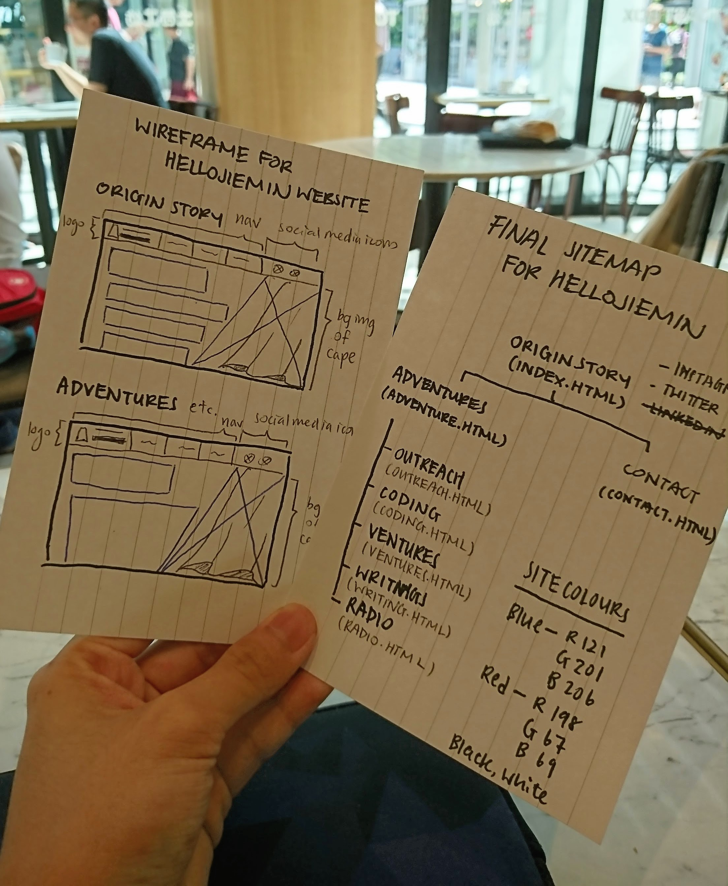
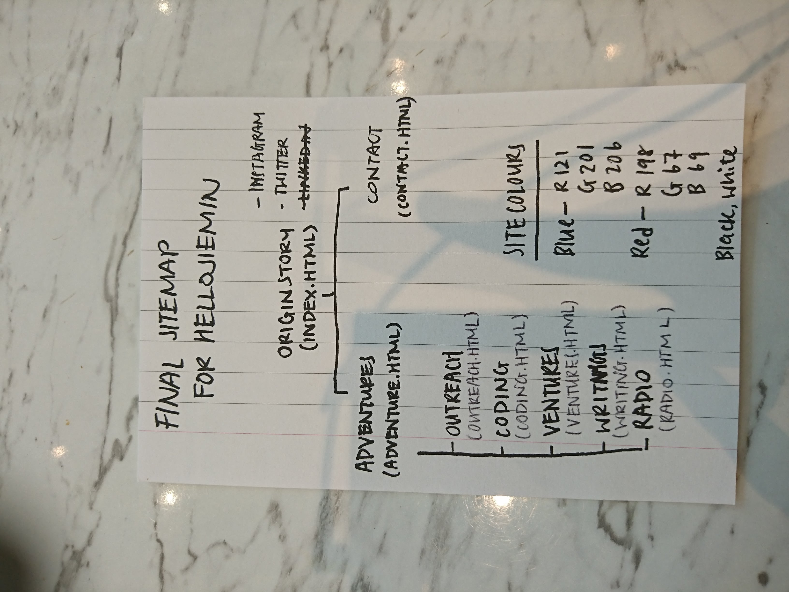
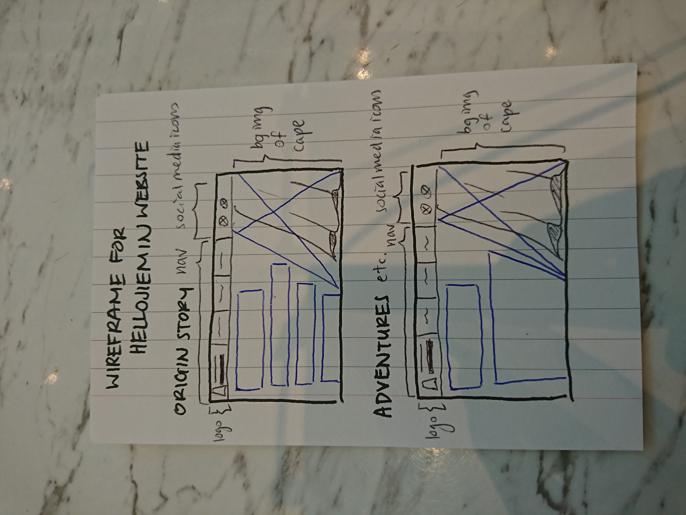
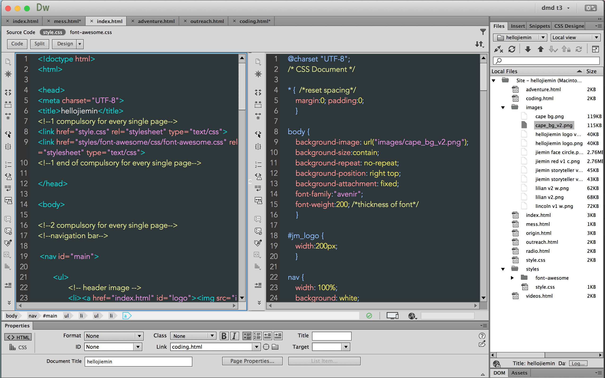

Take a look at this website's
Coding
There are days where what you know is no longer enough. Jie Min often has those days. Coding this website was a challenge she took on for herself, so she could better understand the increasingly digital world. This website was crafted from scratch after 20 hours of hot tea, good music and a lot of time spent of Adobe Dreamweaver, Photoshop and Illustrator.
Concept
Ever since she was young, Jie Min always wanted to be a superhero. She also read a lot of fairytales. Both elements play a big part in her life, and so her branding concept had to be centred around them.
Little Red Riding Hood is a story about bravery. Jie Min, in her own version of the tale, is the Little Red Riding Hood who survived her big bad wolves and emerged victorious. She lives to tell the story and thus she is the storyteller.
Intergral with that, her superhero dream is not diminished. The red cape of this Little Red Riding Hood is the identity of her inner superhero. Her chosen power is to be the voice for causes she believes in.



Sketching and planning
It started with the concept, and now the challenge is to bring the concept to life. Off the paper and into the code!

Starting
One of the most important things coding has taught Jie Min right from the start is keeping things in order. Once it gets messy, nothing gets done. Keeping both the CSS and the HTML5 code side by side reminded her to take a good look at the big picture as she goes along looking at the smaller details.
Carefully monitoring the code is like acknowledging that every action in life has a consequence. When Jie Min understood that, coding became much simpler for her.
End product
The end product, as you can see, is this website. From start to end, crafted with care by Jie Min